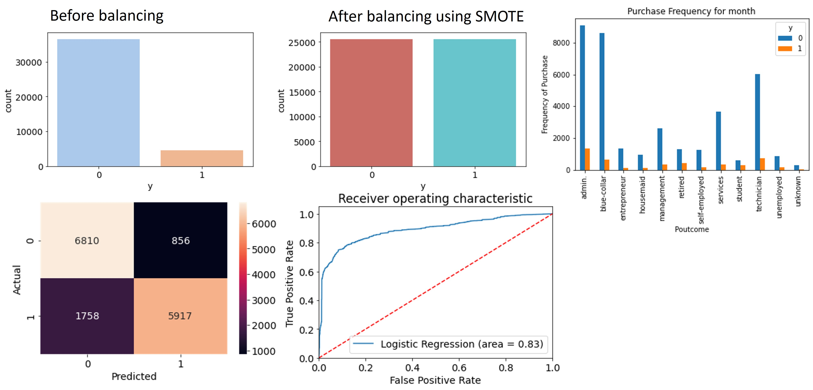
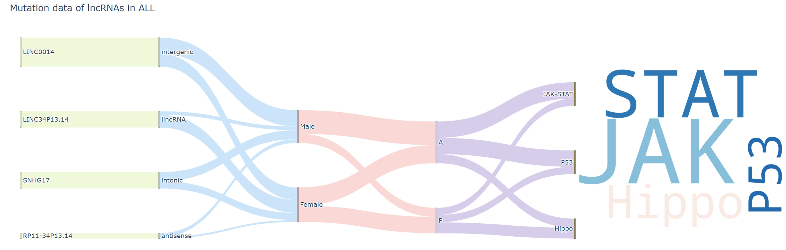
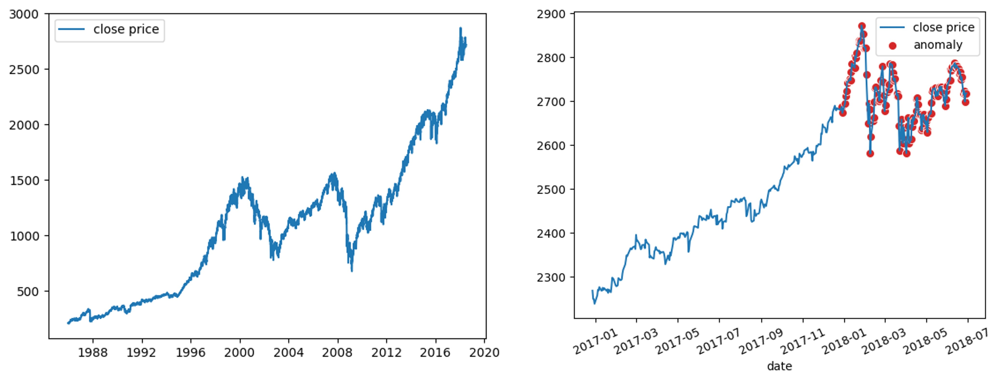
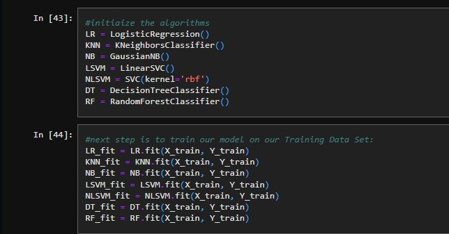
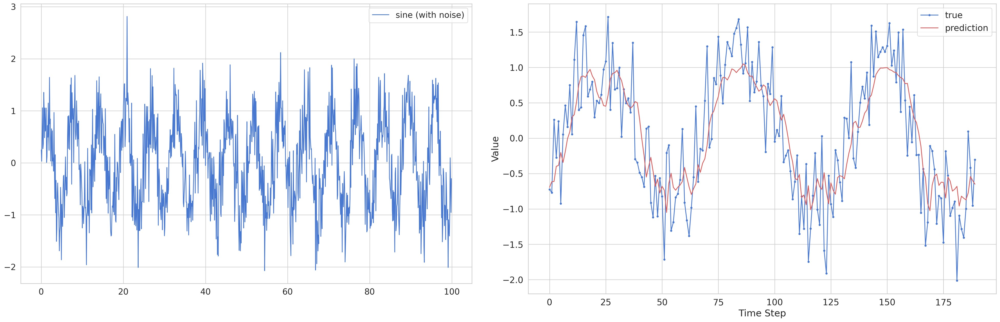

The dataset used in this study originates from the UCI Machine Learning repository and focuses on the phone-based direct marketing campaigns conducted by a Portuguese banking institution. The main objective of the classification is to forecast whether a client will subscribe to a term deposit, represented by the variable "y," using a binary value of 1 or 0

The data visualization incorporates seaborn, plotly, word-cloud, interactive plots, and other advanced techniques. It employs various code snippets and methodologies to effectively narrate data stories, showcasing an array of visual elements like bar plots, violin plots, as well as more intricate Sankey plots and word clouds.

Identification of uncommon events or data points using S&P 500 index data.

Download the titatnic dataset from the kaggle. There are 11 variables using which we have to predict whether a person will survive the accident or not.

How to preprocess Time Series data, build a simple LSTM model, train it, and use it to make predictions.